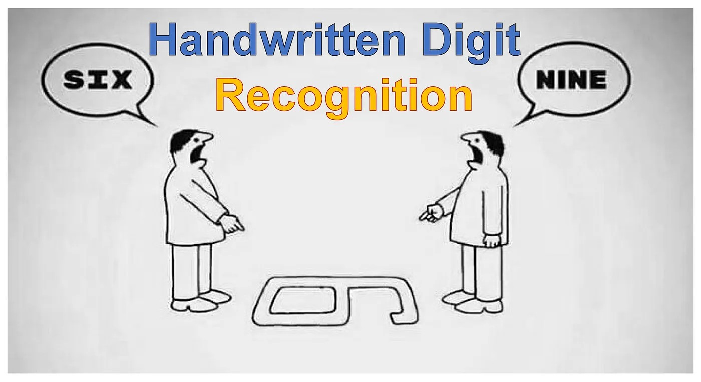

Hand Gesture Presentation Controller project is focused on creating an innovative way to control
PowerPoint presentations using hand gestures. Leveraging computer vision techniques, this project
utilizes the cvzone.handTracking module along with cv2 (OpenCV) to detect and track hand movements,
enabling seamless control of presentation slides without the need for traditional input devices.

Taxi Fare Prediction project aims to develop a machine learning model that accurately predicts taxi
fares based on a given set of features. Using the TaxiFare dataset, which consists of 50,000 rows
and 8 main features, the project explores various predictive modeling techniques to estimate the
fare for a taxi ride. This project is ideal for understanding the application of regression
algorithms, feature engineering, and data preprocessing in a real-world scenario.

HandWritten Digit Recognition in which created a web-app uses a CNN model trained on the MNIST
dataset to recognize handwritten digits (0-9). The frontend, built with HTML, CSS, and JavaScript,
provides a canvas where users can draw digits. The model, stored as model.json, runs in real-time
using TensorFlow.js, predicting the drawn digit instantly. This lightweight, interactive application
performs client-side inference without requiring a backend, making it fast and efficient for digit
recognition
❮
❯